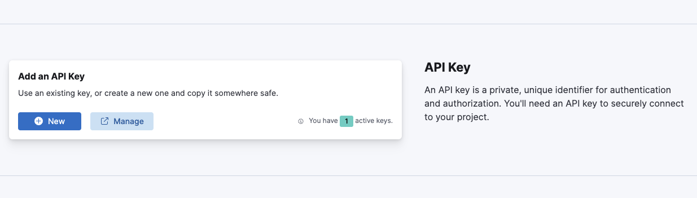

Connecting to your Elasticsearch Serverless endpoint
editThis page assumes you have already created an Elasticsearch Serverless project.
Learn how to securely connect to your Elasticsearch Serverless instance.
To connect to your Elasticsearch instance from your applications, client libraries, or tools like curl, you’ll need two key pieces of information: an API key and your endpoint URL. This guide shows you how to get these connection details and verify they work.
Create a new API key
editCreate an API key to authenticate your requests to the Elasticsearch APIs. You’ll need an API key for all API requests and client connections.
To create a new API key:
-
On the Getting Started page, scroll to Add an API Key and select New. You can also search for API keys in the global search field.
 - In Create API Key, enter a name for your key and (optionally) set an expiration date.
- (Optional) Under Control Security privileges, you can set specific access permissions for this API key. By default, it has full access to all APIs.
- (Optional) The Add metadata section allows you to add custom key-value pairs to help identify and organize your API keys.
- Select Create API Key to finish.
After creation, you’ll see your API key displayed as an encoded string. Store this encoded API key securely. It is displayed only once and cannot be retrieved later. You will use this encoded API key when sending API requests.
You can’t recover or retrieve a lost API key. Instead, you must delete the key and create a new one.
Get your Elasticsearch endpoint URL
editThe endpoint URL is the address for your Elasticsearch instance. You’ll use this URL together with your API key to make requests to the Elasticsearch APIs. To find the endpoint URL:
- On the Getting Started page, scroll to Copy your connection details section, and find the Elasticsearch endpoint field.
- Copy the URL for the Elasticsearch endpoint.
Test connection
editUse curl to verify your connection to Elasticsearch.
curl will need access to your Elasticsearch endpoint and encoded API key.
Within your terminal, assign these values to the ES_URL and API_KEY environment variables.
For example:
export ES_URL="https://dda7de7f1d264286a8fc9741c7741690.es.us-east-1.aws.elastic.cloud:443" export API_KEY="ZFZRbF9Jb0JDMEoxaVhoR2pSa3Q6dExwdmJSaldRTHFXWEp4TFFlR19Hdw=="
Then run the following command to test your connection:
curl "${ES_URL}" \
-H "Authorization: ApiKey ${API_KEY}" \
-H "Content-Type: application/json"
You should receive a response similar to the following:
{
"name" : "serverless",
"cluster_name" : "dda7de7f1d264286a8fc9741c7741690",
"cluster_uuid" : "ws0IbTBUQfigmYAVMztkZQ",
"version" : { ... },
"tagline" : "You Know, for Search"
}
Now you’re ready to start adding data to your Elasticsearch Serverless project.